SpikesPeak — Architecture Overview#
The pipeline diagrams here are generated from the code, not drawn. scripts/make_architecture.py
parses the processor/source registry in src/core/Utils.cpp and every config/*.yaml, and
scripts/build_docs.py re-runs it on each build (~0.15 s). Add a source, a processor or a config and
the pictures follow on the next python scripts/build_docs.py — they cannot drift from the wiring
they depict.
That is the point. The predecessor was a hand-maintained PlantUML description which drifted as modules were added and, because nothing rendered it during the build, shipped invisible — the book referenced an SVG that was never produced. The class diagram below is still PlantUML, because it describes C++ types rather than runtime wiring and nothing generates it.
The generated SVGs are not committed: they are derived, and this repo does not record what can be recomputed.
developer_docs/images/architecture*.svgis git-ignored; the generator is tracked.python scripts/make_architecture.py --checkreports drift without writing anything.
The whole system, generated#
Every profile the backend can load, in one graph — dense on purpose. It is the map for what exists; for a single experiment use the per-profile diagrams further down.
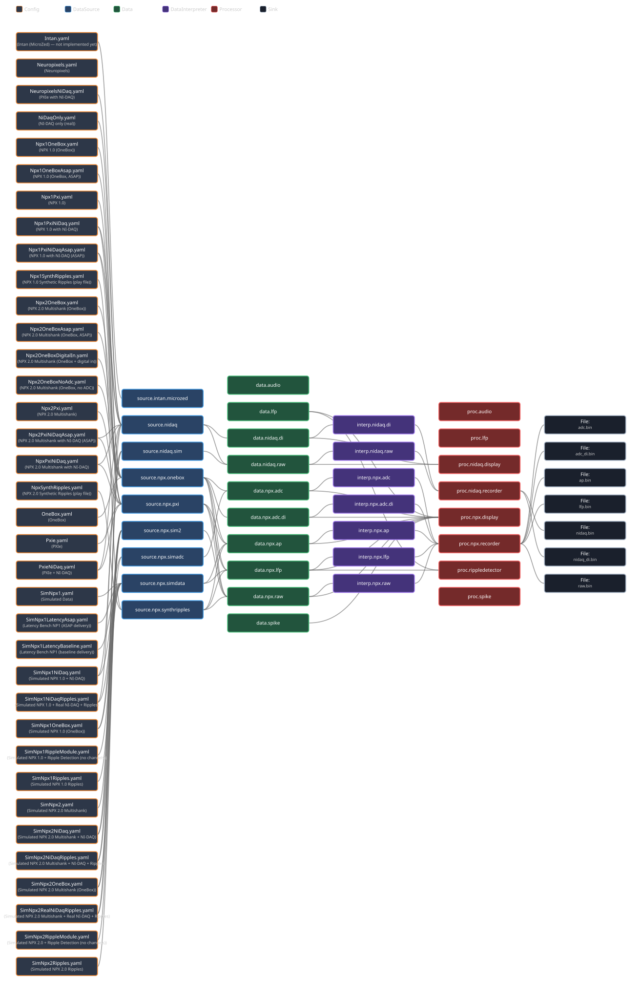
Each diagram is a left-to-right pipeline: Config (the YAML profile, labelled with its internal
name: — the string the GUI and CLI actually select) → DataSource → Data (the named bands it
publishes) → DataInterpreter → Processor → Sink (the files a recording writes). A config's
identity is that name: field, never the filename; see [../developer_docs/ConfigReference.md].
Detailed class diagram#
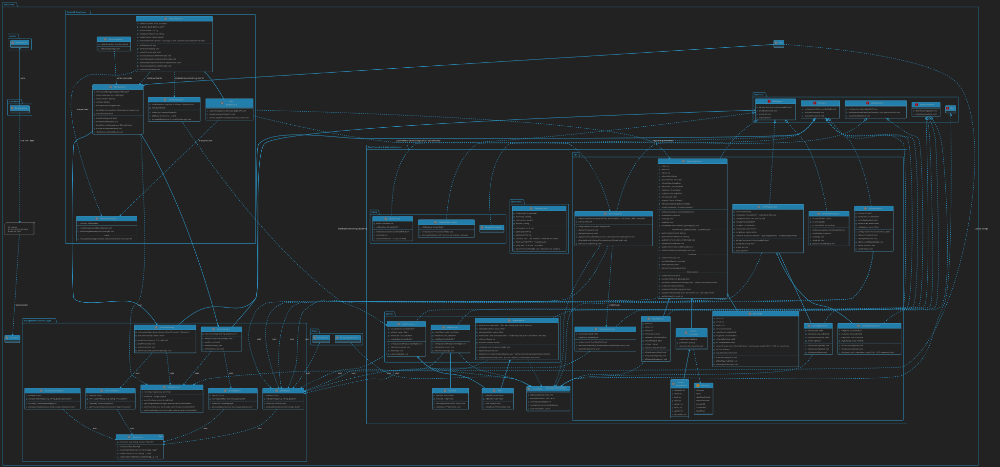
The class diagram above is rendered from
plantuml_export.txtby hand (last regenerated 2026-07-22). It is accurate on the points that matter — the stim server is the Raspberry Pi 3B+ / AM Systems 2300 with the ESP32-S3 as an interchangeable twin, recording rides the per-module QWebChannelQ_INVOKABLE, and the UI is served on :8234 — but unlike the pipeline diagrams it is not regenerated by the build, so treat it as a snapshot.
For design rationale (why an external browser, the Option-A command decision, the file-I/O rule) see
[../developer_docs/SpikesPeak_Architecture_Review.md]; for the live waveform view see
[../developer_docs/LiveDataView.md].
What SpikesPeak is#
A Qt/C++20 real-time neural acquisition app with a browser front-end. The backend is a windowless
QApplication that (a) serves the UI over HTTP :8234 and opens your system browser, and (b) carries
all live traffic over one WebSocket :1234. Data follows a single-producer / multi-consumer
ring-buffer model with a thread per source and a thread per sink.
Hardware/Sim ─►[Source]─► CircularBuffer ─►[Sink(s): Display / Record / LFP / Ripple / Audio]─► browser / disk
(worker thread) (1 producer, (each in its own thread)
N consumers)
browser ◄── WebSocket :1234 (binary waveform stream + JSON commands + QWebChannel RPC)
(served HTTP :8234)
Layered structure (see plantuml_export.txt)#
Layer 0 — Interfaces: IDataSource (init/close/startAcq/stopAcq), IDataSourceWorker
(start/stop acquiring, runs in a worker thread), IProcessor (configure/start/stop), IData (the
buffer), IDataInterpreter (serialize raw samples → wire/disk format).
Layer 1 — Control & Input: MainController (state machine + command handling),
WebSocketServer (transport + multiplexing + lifecycle), WebSocketTransport (QWebChannel ↔ socket
bridge, one per client), QWebChannel (RPC), CommandDispatch (binary-command pub/sub),
KeyboardListener (console input).
Layer 2 — Management & Services: SourceManager + ProcessorManager (instantiate / configure /
thread / lifecycle), ConfigManager (YAML via rapidyaml), the four Registries (Source / Processor
/ Data / DataInterpreter) backed by a templated ObjectFactory (name → constructor lambda).
Layer 3 — Data & Processing: CircularBuffer<T,Aux>, the filters (Filter, Avx2Filter), the
Npx module (probe source + workers + IMRO model + interpreter + display/record), and the generic
processors (LFP, RippleDetector, Audio).
Registered types (the plug-in catalog — src/core/Utils.cpp registerBuiltInTypes())#
Everything pluggable is registered by name here and referenced by name everywhere else; a YAML
profile in config/ wires names together. A source's Q_INVOKABLE panel is exposed per profile.
| Kind | Registry name | C++ class | Notes |
|---|---|---|---|
| source | source.npx.simdata |
Npx::SimulatedDataSource |
always available |
| source | source.npx.synthripples |
Npx::SynthRippleSource |
always available |
| source | source.npx.pxi |
Npx::NeuropixelsSource |
NPX_HW_ENABLED; slot/port/dock = 3/4/1 (hard-coded) |
| source | source.nidaq |
NiDaq::NIDAQSource |
NIDAQ_HW_ENABLED |
| data | data.npx.raw |
CircularBuffer<int16, PacketInfo> |
NP2 raw |
| data | data.npx.ap / data.npx.lfp |
CircularBuffer<int16, PacketInfo> |
NP1 AP (30 kHz) + LFP (2.5 kHz) |
| data | data.lfp |
CircularBuffer<float,float> |
derived LFP |
| data | data.audio |
Npx::NpxRawData |
audio path |
| data | data.nidaq.raw |
NiDaq::NiDaqData |
NIDAQ_HW_ENABLED |
| proc | proc.npx.display |
Npx::DisplayProcessor |
min/max decimation for the browser |
| proc | proc.npx.recorder |
Recording::RecordProcessor |
also proc.nidaq.recorder (same class) |
| proc | proc.lfp |
LFPProcessor |
AVX2 filter/downsample |
| proc | proc.rippledetector |
RippleDetector |
SWR detection |
| proc | proc.audio |
AudioProcessor |
|
| interp | interp.npx.raw / .ap / .lfp |
Npx::NpxDataInterpreter |
int16 framing |
| interp | interp.nidaq.raw |
NiDaq::NiDaqDataInterpreter |
NIDAQ_HW_ENABLED |
The data plane (one producer, many consumers)#
CircularBuffer<tData, tAux> (src/core/CircularBuffer.hpp): the source is the single producer
(addProducer → write at getDataStart() → commitWrite(id, n) which bumps the sample count and
releases one semaphore per waiting consumer). Each sink is an independent consumer (addWaitingConsumer
→ block on waitForAvailable(id, ms, &n) → read via constDataAt / constAuxDataAt → advance its own
read marker). So Display, Record, and LFP each read the same stream at their own pace. A sink that
derives a new stream (e.g. LFP) is itself a producer into a downstream buffer.
Example NP1 chain: source.npx.pxi → data.npx.ap/lfp → {proc.npx.display → browser, proc.npx.recorder → disk}.
Threading & lifecycle (Connect → Play → Pause → Disconnect)#
- Connect (
MainController::handleConnectRequest, main thread): buildSourceManager+ProcessorManager; instantiate the profile's sources (initDataSource) and processors (configure);ProcessorManagergives each processor its ownQThread(moveToThread) and wires start/stop signals.WebSocketServerregisters the source'sQ_INVOKABLEobject on the QWebChannel. - Play (
handlePlayRequest): processors start first — each thread starts, the processor adds its consumer and blocks on the buffer, then emitssigIpStarted. When all are ready (sigPmProcessorsStarted),SourceManagercallsstartAcq()on the source, which spins up its worker thread and begins producing. (A sink that never emitssigIpStartedwould stall the start.) - Steady state: source worker loops →
commitWrite→ wakes consumers → Display serializes a min/max batch →sigIpDataReady→WebSocketServer::broadcastData→ browser. - Pause: stop the source worker, then signal processors to stop (
sigPmStopProcessing→slIpStopProcessor→ thread quit). - Disconnect: close sources, clear all registries (deletes buffers), tear down the managers.
Transport: one WebSocket, triple-multiplexed (main.cpp, WebSocketServer.cpp)#
- HTTP :8234 — a
QTcpServerserveswebinterface/and the app opens the browser. - WebSocket :1234 carries three logical channels:
1. Binary waveform stream —
[streamId][nPts][ts,(min,max)×nCh]…frames pushed to the browser. 2. JSON app commands (id0x1000) —setPlaying/selectSource/Disconnect→MainController; alsodeviceReadyevents back to the browser. 3. QWebChannel RPC (id0x1001) — per-moduleQ_INVOKABLEs viaWebSocketTransport: the IMRO panel and recording (RecordProcessor::setRecording). The legacy0x1001binary-command path throughCommandDispatchwas removed;CommandDispatchnow has a single remaining subscriber,AudioProcessor(id0x218). See../developer_docs/ModuleCommunication.md. - Lifecycle:
WebSocketServerstarts a 2 s grace timer when the last client disconnects and quits the app on timeout (a refresh cancels it);main.cppsetsquitOnLastWindowClosed(false).
Frontend (webinterface/)#
main.js AppController (toolbar, columns, status, play/record) · NetworkClient (WebSocket parse +
append) · DataStore (per-stream channel objects, two data series each) · ChartColumn (one SciChart
column: filters, slider, depth-sorted draw) · ImroManager (probe-map editor + the live-view
ordering/bands over QWebChannel) · Config (constants). See developer_docs/LiveDataView.md.
Where Neuropixels 1.0 lives in all this#
- Source:
NeuropixelsSource(source.npx.pxi) detects the probe, loads/edits/applies the IMRO map (6Q_INVOKABLEs over QWebChannel), and on Play spawnsNpx1Probe— a worker that reads multiplexed superframes and demultiplexes them into the separate AP (30 kHz) and LFP (2.5 kHz) ring buffers (12 AP + 1 LFP sample per superframe). - Sinks:
DisplayProcessordecimates both bands to the browser;RecordProcessorwrites them to disk. Full NP1.0 inventory: [../SpikesPeak_Status.md].
Per-profile pipelines#
One diagram per config/*.yaml, generated with the rest. These are the useful ones day to day: they
answer "what does this profile actually wire up" without reading the YAML.
Neuropixels 1.0 — hardware
Asap variants set the low-latency source flag ([../developer_docs/LatencyProfiling.md]) and are
otherwise identical to their siblings. They are selectable in the GUI, so picking one by accident
is possible.
PXIe
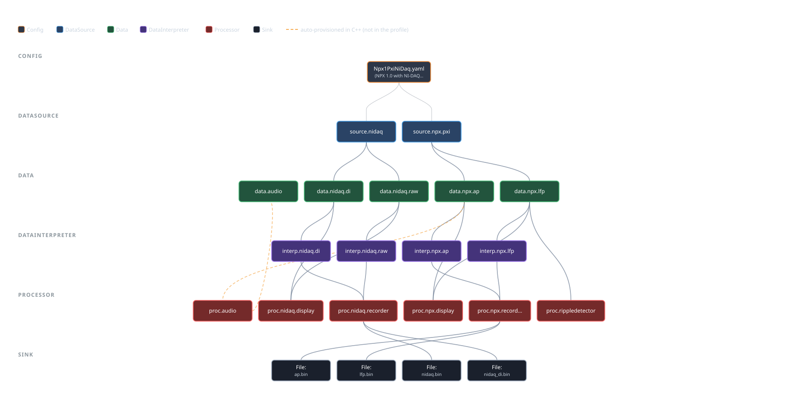
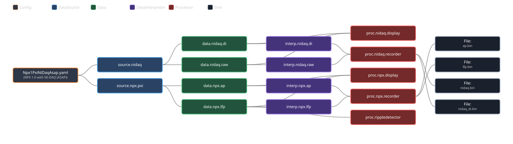
OneBox
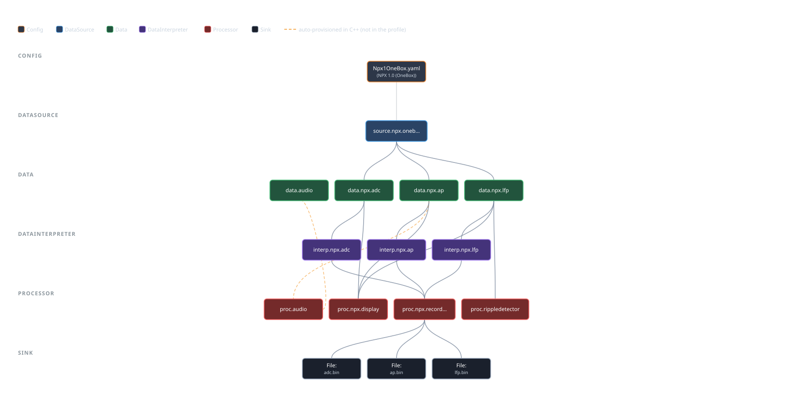
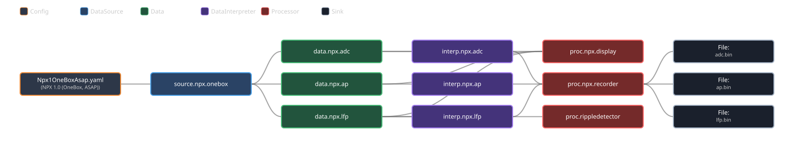
Neuropixels 2.0 — hardware
PXIe
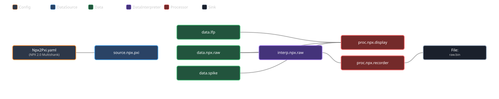
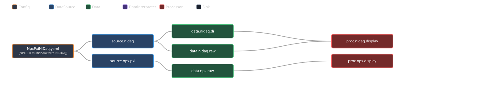
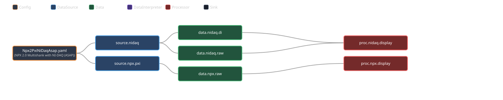
OneBox — Npx2OneBox is what the current rig runs.
Npx2OneBoxNoAdc is a measurement control, not an operational profile: it differs from
Npx2OneBox in exactly one variable — whether the 12-channel ADC band exists — which is what makes
it usable as the control arm of a recording-throughput measurement. A session recorded with it has no
stimulus channel at all, because the closed-loop stimulus is captured through that ADC.
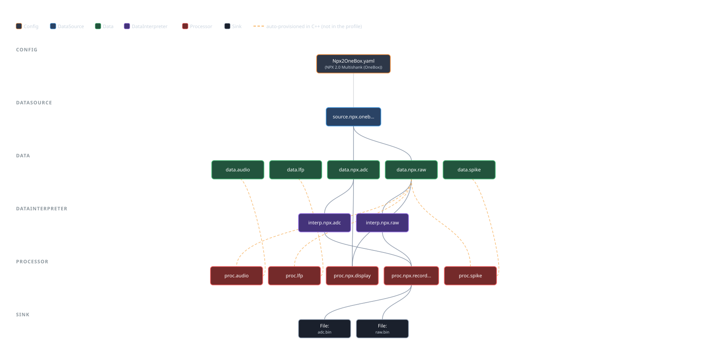
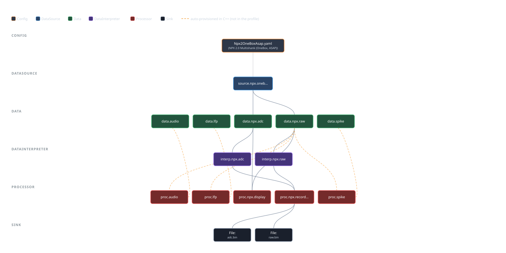
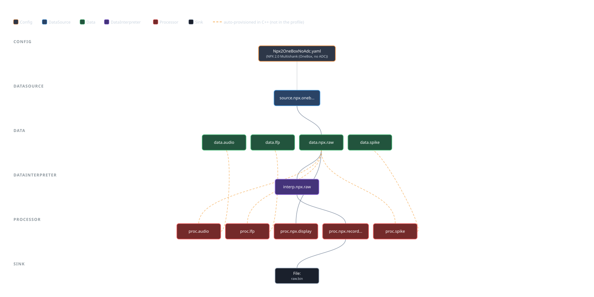
NI-DAQ only
No probe: the PXI-6133 analog/digital inputs alone. Useful for exercising the DAQ half of a rig independently of a probe.
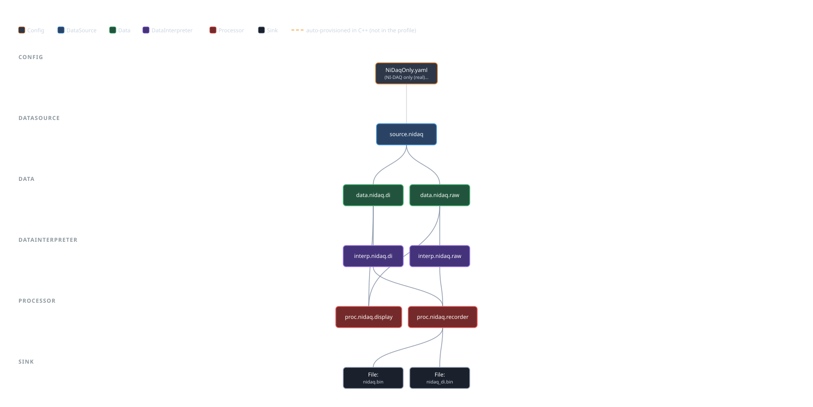
Play-file (synthetic ripple) profiles
Replay a recorded or synthesised HDF5 file through the same pipeline as hardware — which is why a
detector tuned on a play file behaves the same on a probe. See
[../developer_docs/SyntheticSources.md].
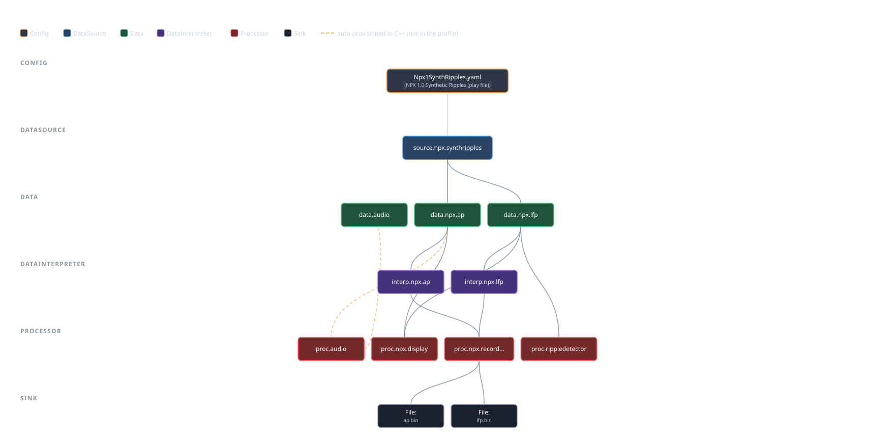
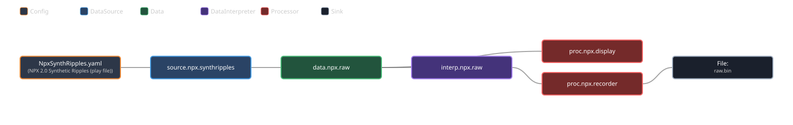
Simulated — NPX 1.0
No hardware at all, but the same display processor, ring buffers, WebSocket and GUI as a real probe.
That is what makes "run it in sim first" a diagnostic rather than a gesture: if sim streams and
hardware does not, it is the rig and not the code ([../developer_docs/Testing.md] §4).
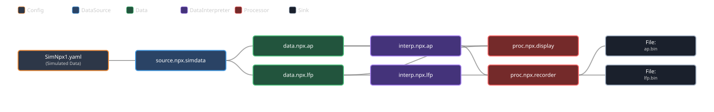
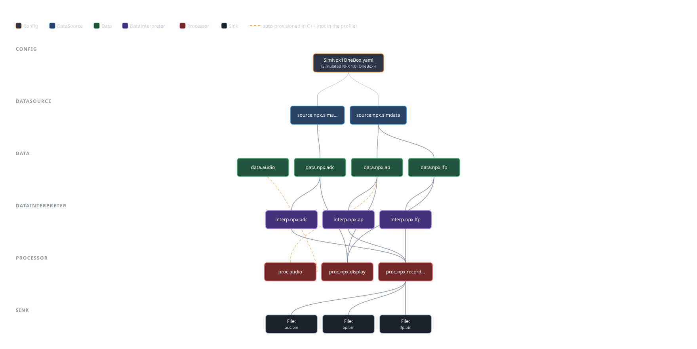
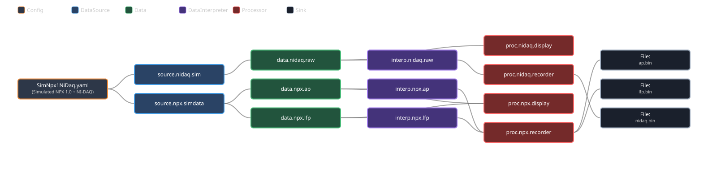


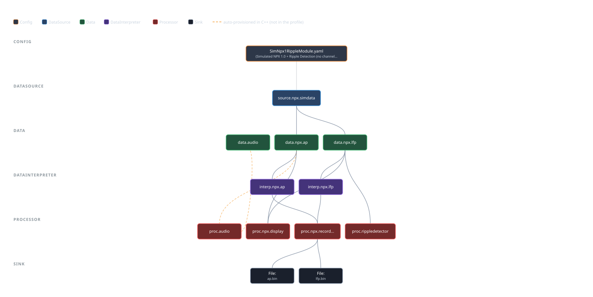
The latency A/B pair, identical but for the low-latency flag — which is the entire point of them:
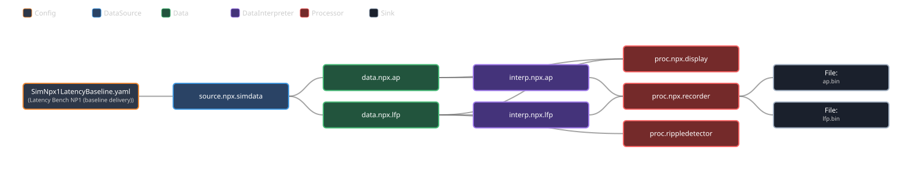
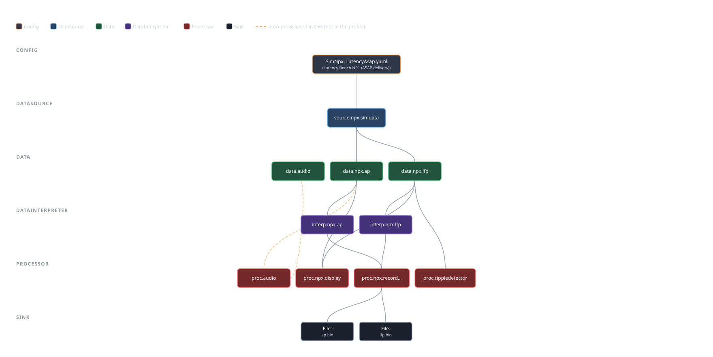
Simulated — NPX 2.0
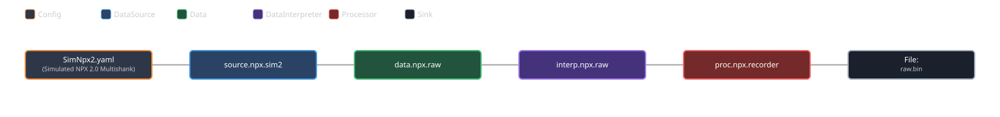

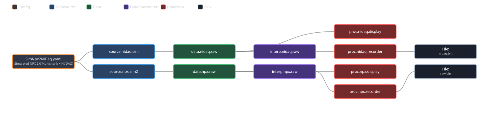
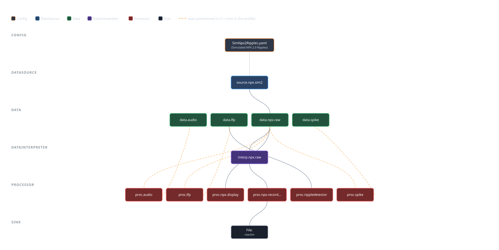
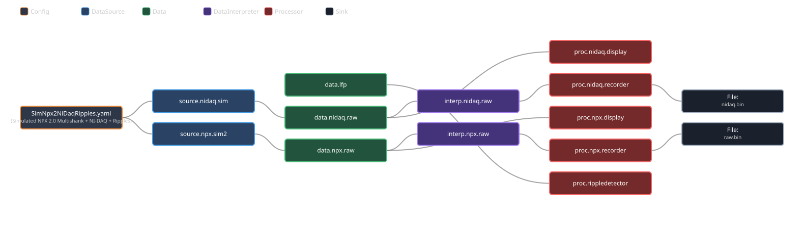
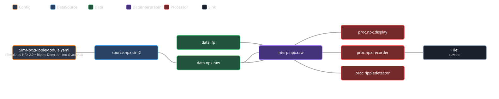

A new
config/*.yamlproduces a new SVG automatically, but will not appear on this page until it is listed above. The build prints each file it generates, so the omission is visible rather than silent.